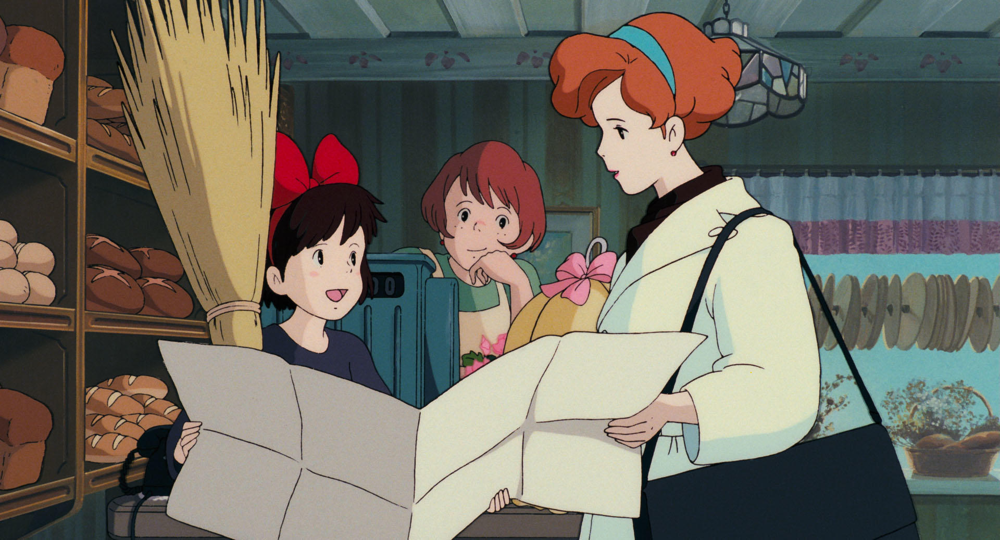
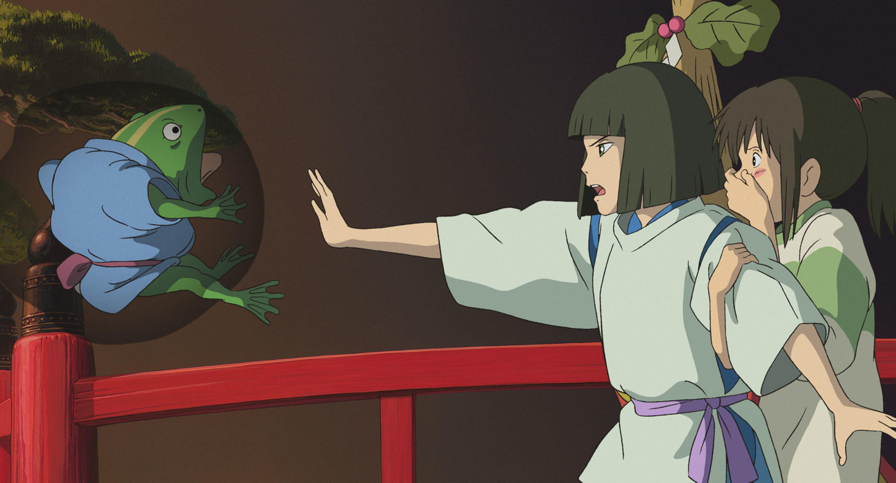
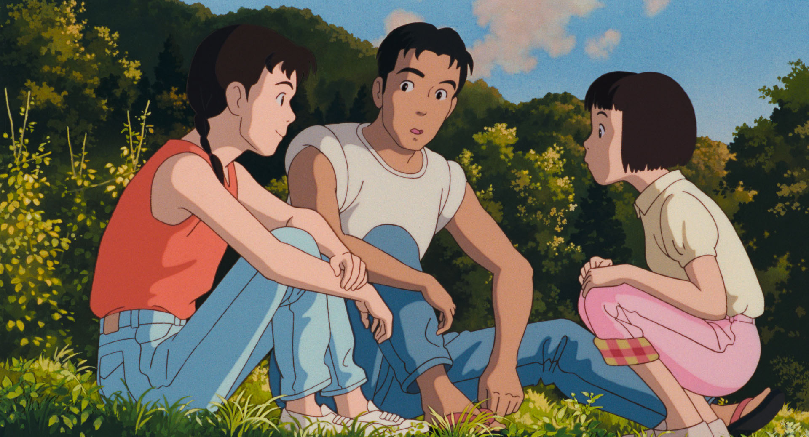

Recommend

Kiki's Delivery Service
กิกิ แม่มดน้อยวัย 13 ปี ที่ต้องออกเดินทางค้นหาตัวเองพร้อมกับแมวน้อยและไม้กวาดคู่ใจซึ่งการเดินทางครั้งนี้นำเธอไปยังดินแดนที่ใฝ่ฝันและได้อาศัยอยู่กับครอบครัวทำขนมปัง
ซึ่งสอนให้เธอปรับตัวเข้ากับสังคมใหม่ รู้จักการทำงาน และใช้ไม้กวาดวิเศษให้เป็นประโยชน์
อีกทั้งยังมีเพื่อนที่แสนดีคอยให้กำลังใจในยามที่เธอมีปัญหาด้วย

Ponyo on the Cliff by the Sea
บอกเล่ามิตรภาพระหว่างเด็กชายวัย 5 ขวบ กับ โปเนียว ปลาทองหน้าเหมือนคนที่เขาเก็บมาเลี้ยงแต่แล้วทั้งสองก็ต้องพรากจากกัน เนื่องจากพ่อของโปเนียวต้องการให้ลูกสาวตัวเองกลับสู่ท้องทะเล
จนนำมาซึ่งเหตุการณ์ชุลมุนจากการหลบหนีของปลาทองตัวน้อยที่ค่อย ๆ กลายร่างเป็นคน
และหายนะที่คุกคามเมืองชายฝั่งจากอุบัติเหตุอันไม่ตั้งใจ

SPIRITED AWAY
เด็กสาวคนหนึ่งที่หลงเข้าไปในมิติแห่งวิญญาณและต้องให้ชื่อตัวเองเพื่อแลกกับการเข้าไปปลดปล่อยพ่อแม่ที่ถูกสาปให้กลายเป็นหมู หนังเรื่องนี้แฝงปรัชญา
การใช้ชีวิตไว้อย่างแนบเนียน

Only Yesterday
เป็นการเล่าเรื่องราวแบบสลับย้อนไปย้อนมา เนื้อหาพูดถึงทาเอโกะ สาวออฟฟิศที่กำลังเดินทางไปพักผ่อนและช่วยงานฟาร์มในชนบท
ซึ่งระหว่างทางก็ทำให้เธอหวนระลึกถึงความทรงจำในอดีตที่แสนจะซับซ้อน
ตัดสลับกับสิ่งที่เธอต้องเผชิญอยู่ในปัจจุบัน

Porco Rosso
ดัดแปลงมาจากการ์ตูนของเขาเอง เป็นเรื่องราวของ พอร์โค รอสโซ หมูนักบินล่าเงินรางวัลที่คอยช่วยเหลือคนจากโจรสลัดเพื่อแลกกับค่าตอบแทน จนสุดท้ายก็ตกเป็นเป้าหมายของพวกโจรสลัดไปด้วย
ซึ่งในแง่มุมของแอนิเมชั่น เรื่องนี้ทำได้สนุกสนาน สร้างมาตรฐานแอ็คชั่นได้ดีมาก
อีกทั้งยังสะท้อนความคิดของทหารหลังจากสงครามได้ด้วย

Castle in the Sky
เด็กชายหญิง 2 คนออกเดินทางตามหา ลาพิวต้า เมืองลอยฟ้าในตำนานซึ่งเป็นที่เลื่องลือกันว่ามีสร้อยเรืองแสงเป็นพลังงานขับเคลื่อน
อีกทั้งยังเป็นสมบัติล้ำค่าที่ทุกคนหมายปอง
ทว่าการเดินทางครั้งนี้กลับทำให้เด็กทั้ง 2 คน
กลายเป็นผู้นำทางให้แก๊งโจรสลัด ที่หมายจะล่าสมบัติชิ้นนั้น
จึงทำให้เกิดเป็นการต่อสู้กับฝ่ายอธรรมที่ต้องการช่วงชิงสร้อยเรืองแสงล้ำค่านั่นเอง